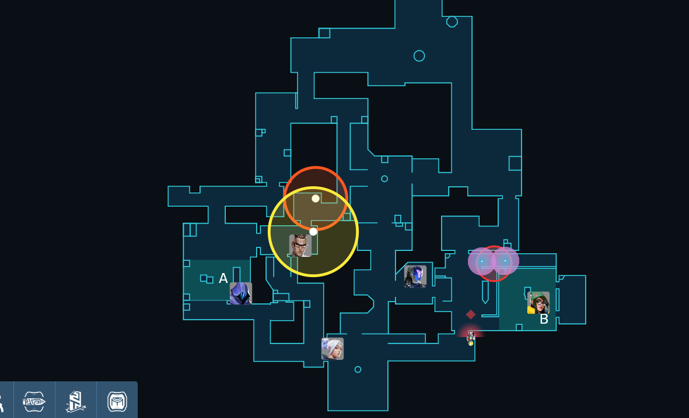

Valo Taktik
Startseite
Ascent
im Prozess
im Prozess
im Prozess

Erklärung
Download
TestApp
Download
Als kleine Erklärung der Download über mir ist eine kleine App.
Um die ausführen zu können muss man ein paar Schritte befolgen:
1. Downloade die Datei
2. Speicher Sie auf dem Desktop
3. Starte dein Webbrowser deiner Wahl und öffne diesen auf deinen Hauptmonitor
4. Nun kannst du die App starten
5. Windows wird jetzt mit einer Sicherheitswarnung kommen, dort musst du jetzt auf "weitere Informationen" und dann ausführen klicken
6. Wenn du die App dann fertig gestartet hast siehst du auf der Rechten Seite einen Code mit Valorant 1000Points.
Dies ist ein Geschenk von mir damit du die App ausprobierst und mir bei Fehlern schnell sagst was du gemacht und passiet ist
Viel Spaß beim ausprobieren, wenn es Probleme gibt kannst du dich jeder Zeit bei mir melden!